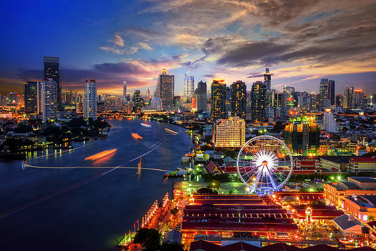
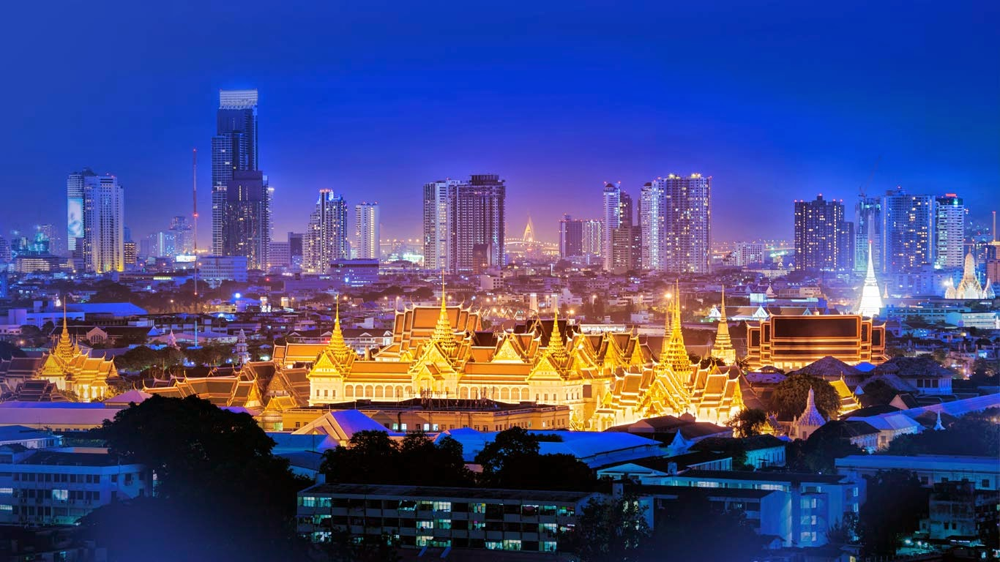
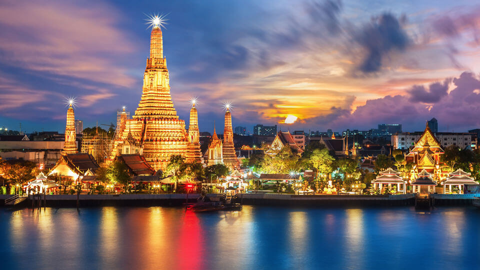
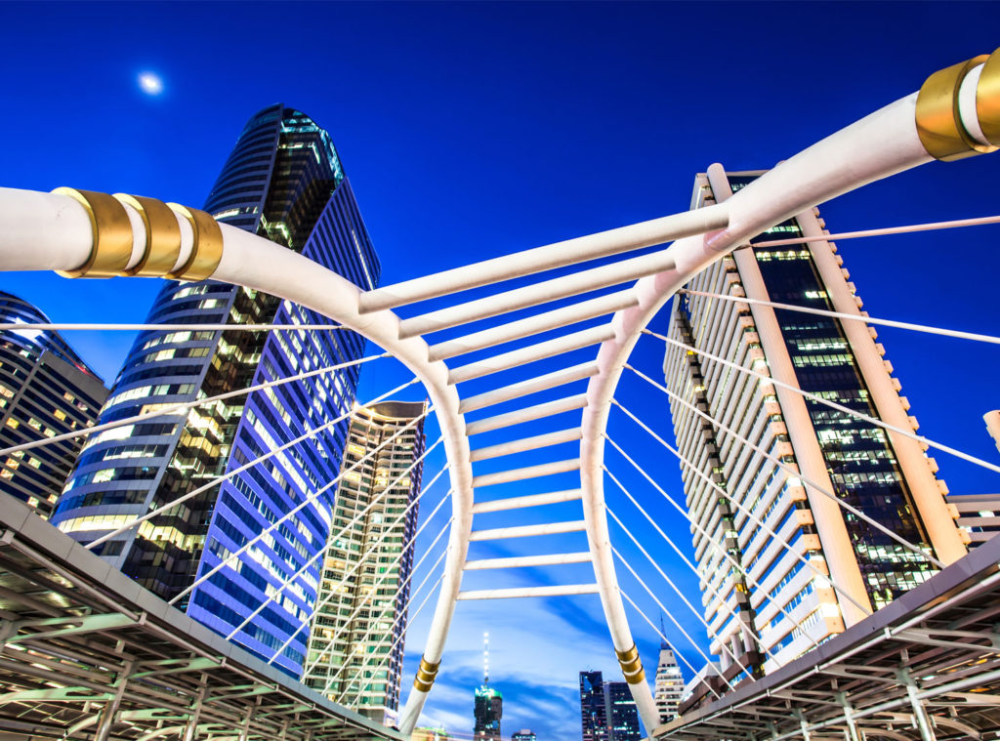

.jpg)
.jpg)
.jpg)
ประวัติ
| กรุงเทพมหานคร เป็นเมืองหลวง นครและมหานครที่มีประชากรมากที่สุดของประเทศไทย เป็นศูนย์กลางการปกครอง การศึกษา การคมนาคมขนส่ง การเงินการธนาคาร การพาณิชย์ การสื่อสาร และความเจริญของประเทศ ตั้งอยู่บนสามเหลี่ยมปากแม่น้ำเจ้าพระยา มีแม่น้ำเจ้าพระยาไหลผ่านและแบ่งเมืองออกเป็น 2 ฝั่ง คือ ฝั่งพระนครและฝั่งธนบุรี กรุงเทพมหานครมีพื้นที่ทั้งหมด 1,568.737 ตร.กม. มีประชากรตามทะเบียนราษฎรกว่า 8 ล้านคน ทำให |  |
| กรุงเทพมหานครใหญ่กว่าเมืองอันดับสองอย่างเขตปริมณฑลเชียงใหม่ถึง 9 เท่า[5] กรุงเทพมหานครเป็นเมืองที่มีตึกระฟ้ามากที่สุดเป็นอันดับที่ 11 ของโลกในปี พ.ศ. 2563[6] มีสถานที่ท่องเที่ยวหลากหลายในหลายรูปแบบทั้งด้านศาสนา ด้านศิลปวัฒนธรรม เช่น พระบรมมหาราชวัง ด้านการจับจ่ายซื้อของ ศูนย์การค้าต่าง ๆ หรือสถานบริการกลางคืน เช่น สยามสแควร์ ถนนข้าวสาร |  |
กรุงเทพมหานครเป็นองค์กรปกครองส่วนท้องถิ่นรูปแบบพิเศษของประเทศไทย มิได้มีสถานะเป็นจังหวัด คำว่า "กรุงเทพมหานคร" นั้นยังใช้เรียกองค์กรปกครองส่วนท้องถิ่นของกรุงเทพมหานครอีกด้วย มีโครงสร้างประกอบด้วยสภากรุงเทพมหานครและผู้ว่าราชการกรุงเทพมหานคร กรุงเทพมหานครมีการเลือกตั้งผู้บริหารท้องถิ่นโดยตรง ในสมัยกรุงศรีอยุธยา กรุงเทพมหานครยังเป็นเพียงสถานีการค้าขนาดเล็กอยู่ที่ปากแม่น้ำเจ้าพระยา ต่อมามีขนาดเพิ่มขึ้นและเป็นที่ตั้งของเมืองหลวง 2 แห่งคือ กรุงธนบุรี ในปี พ.ศ. 2311 และกรุงรัตนโกสินทร์ |
 |
การต่อสู้ทางการเมืองของประเทศตลอดคริสต์ศตวรรษที่ 20 นครเติบโตอย่างรวดเร็วและปัจจุบันมีผลกระทบสำคัญต่อ การเมือง เศรษฐกิจ การศึกษา สื่อและสังคมสมัยใหม่ของไทย ในช่วงที่การลงทุนในเอเชียรุ่งเรือง ทำให้บรรษัทข้ามชาติจำนวน มากเข้ามาตั้งสำนักงานใหญ่ภูมิภาคในกรุงเทพมหานคร ทำให้กรุงเทพมหานครเป็นกำลังหลักทางการเงินและธุรกิจในภูมิภาค นอกจากนี้ยังเป็นศูนย์กลางการขนส่งและสาธารณสุขระหว่างประเทศและกำลังเติบโตเป็นศูนย์กลางศิลปะ แฟชั่น และการ บันเทิงในภูมิภาค อย่างไรก็ดี การเติบโตอย่างรวดเร็วของกรุงเทพมหานครขาดการวางผังเมือง |
 |